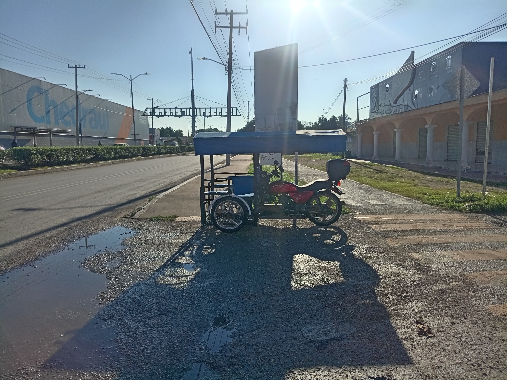

Morita el Mototaxista - 10 AÑOS LLEVANDO A LAS FAMILIAS DE KANASIN EMK - Conciencia Pura 24/7
PROCESO INTERNO DE MORENA ASPIRANTE A COORDINACION MUNICIPAL COMITES DE DEFENSA DE LA TRANSFORMACION Y SOBERANIA NACIONAL REGISTRO: HASTA 18 DE OCTUBRE 2026 FECHA LIMITE: 13 DICIEMBRE RESULTADOS: 31 DICIEMBRE 2026
EL VERDADERO CAMBIO LO HACEMOS TODOS CON EL PUEBLO TODO, SIN EL PUEBLO NADA

Aspirante para la Coordinacion de los Comites de Defensa de la Transformacion y Soberania Nacional
📩 ENVIA TU GESTION - GENERA TU ACUSE DE RECIBIDO EN AUTOMATICO
Llena tus datos, sube tu archivo PDF, Word, foto o imagen, y genera tu acuse con folio, fecha, hora, firma y sello. Descargalo en PDF.
EMK - ESTAMOS MEJORANDO KANASIN 24/7
ACUSE DE RECIBIDO - GESTION CIUDADANA
LA CAPITAL DEL PANUCHO, ES - KANASIN, YUCATAN
FOLIO:
FECHA: | HORA:
NOMBRE:
COLONIA:
TIPO:
GESTION:
ARCHIVO ADJUNTO:
Se recibio su peticion ciudadana para seguimiento. Este documento es solo acuse de recibido, no es promesa de campana ni compromiso de obra. Actividad ordinaria interna, proceso interno MORENA.
EMK RECIBIDO KANASIN
EDUARDO JAVIER MORA GONZALEZ
Eduardo Javier Mora Gonzalez
Aspirante a Coordinacion Municipal Comites de Defensa de la Transformacion - Kanasin
Convocatoria y Registro: Hasta 18 de Octubre de 2026
Periodo Organizacion Interna: Hasta 13 de Diciembre de 2026
Resultados Finales: Hasta 31 de Diciembre de 2026
FUNDAMENTO ASPIRACION - Sin candidatura
Esta pagina NO promueve candidatura a cargo de eleccion popular. Es manifestacion de intencion para COORDINADOR DE ORGANIZACION DE MORENA Comites Defensa, Proceso Organizacion, Formacion y Afiliacion Art 15-20 Estatuto.
AVISO LEGAL BLINDADO - ACTIVIDAD ORDINARIA PROCESO INTERNO MORENA - NO ACTO ANTICIPADO DE PRECAMPAÑA NI CAMPAÑA
1. NIVEL FEDERAL - CONSTITUCION POLITICA DE LOS ESTADOS UNIDOS MEXICANOS
Art. 6 Libertad de expresion y manifestacion de ideas. Art. 7 Libertad de escribir y publicar. Art. 9 Libertad de asociacion y reunion. Art. 35 Fracc. I, II y III Derechos politicos de votar, ser votado y asociarse. Art. 41 Partidos politicos como entidades de interes publico, fines de promover participacion del pueblo, contribuir a integracion de representacion nacional, y como organizaciones ciudadanas hacer posible acceso al ejercicio del poder publico. Art. 115 Municipio libre, base de division territorial y organizacion politica y administrativa. Art. 134 Recursos publicos con eficiencia, eficacia, economia, transparencia y honradez. Esta pagina NO usa recurso publico.
2. NIVEL FEDERAL - LEYES ELECTORALES - INE
LEY GENERAL DE PARTIDOS POLITICOS: Art. 2, 3, 23, 25, 34, 35 - Derechos y obligaciones de partidos, vida interna, organizacion, afiliacion y formacion. LEY GENERAL DE INSTITUCIONES Y PROCEDIMIENTOS ELECTORALES (LGIPE): Art. 196, 198, 211, 242 - Actividades ordinarias permanentes de partidos NO son actos anticipados de precampana ni campana. Proceso interno de organizacion, formacion y afiliacion es actividad ordinaria. INE - Reglamento de Fiscalizacion: No hay gasto de precampana ni campana, no hay propaganda electoral, no hay uso de recurso publico.
3. NIVEL ESTATAL YUCATAN - IEPAC - LEY DE GOBIERNO DE LOS MUNICIPIOS
LEY DE INSTITUCIONES Y PROCEDIMIENTOS ELECTORALES DEL ESTADO DE YUCATAN (LIPEEY - IEPAC): Art. 196, 198, 199, 200 - Actividades ordinarias de partidos, procesos internos de seleccion de dirigentes y coordinadores de organizacion NO son actos anticipados. Art. 211 y 242 homologos estatales. LEY DE GOBIERNO DE LOS MUNICIPIOS DEL ESTADO DE YUCATAN: Art. 1, 2, 7, 30, 55 Fracc. I y II, 77, 82, 86 - Municipio de Kanasin, Ayuntamiento, participacion ciudadana, fomento de organizacion vecinal, gestion de servicios publicos (alumbrado, bacheo, agua, basura) como peticion ciudadana, no como promesa de campana. CONSTITUCION POLITICA DEL ESTADO DE YUCATAN: Art. 16, 20, 73, 76, 77 - Municipio libre, participacion ciudadana.
4. NIVEL PARTIDO - MORENA - ESTATUTO, DOCUMENTOS BASICOS
ESTATUTO DE MORENA: Art. 5 - Protagonistas del Cambio Verdadero. Art. 13 - Afiliacion libre, individual y voluntaria. Art. 15, 16, 17, 18, 19, 20 - Comites de Defensa de la Transformacion, organizacion, formacion y afiliacion, coordinadores de organizacion. Art. 24, 33 - Padron, registro. Art. 41 Bis - Periodo de organizacion interna. Art. 44 y 44 Bis - Resultados y procesos internos. DECLARACION DE PRINCIPIOS Y PROGRAMA DE MORENA: No mentir, no robar, no traicionar al pueblo. Con el pueblo todo, sin el pueblo nada.
5. PLATAFORMA GRATUITA - SIN RECURSO PUBLICO - SIN GASTO
Esta pagina esta publicada en GitHub Pages (github.com) - SERVICIO GRATUITO, PUBLICO, SIN COSTO, SIN GASTO, SIN RECURSO PUBLICO FEDERAL, ESTATAL O MUNICIPAL, SIN RECURSO DE PARTIDO, SIN DONATIVO, SIN CONTRATO. Es trabajo personal, voluntario, con telefono propio y datos propios. No se contrata publicidad, no se pauta en Facebook, no se usa personal ni vehiculos oficiales. Solo se comparte informacion de actividad ordinaria interna dirigida a Protagonistas del Cambio Verdadero. EDUARDO JAVIER MORA GONZALEZ - Aspirante a Coordinacion Municipal de los Comites de Defensa de la Transformacion y Soberania Nacional - Kanasin, Yucatan - Secciones 0204-0223. Registro 18 Oct 2026, Limite 13 Dic 2026, Resultados 31 Dic 2026. Con el Pueblo Todo, Sin el Pueblo Nada. La Patria no se vende, se ama y se defiende.